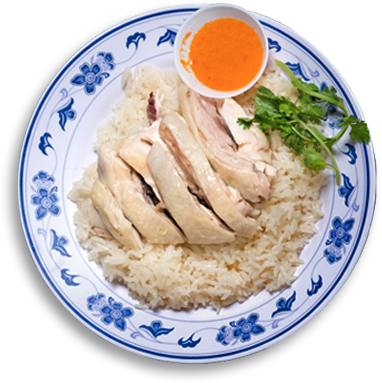
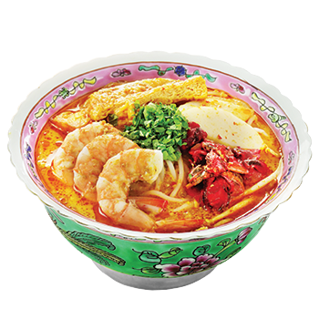
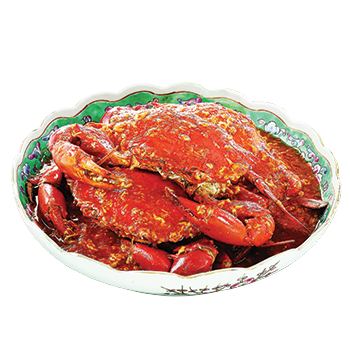
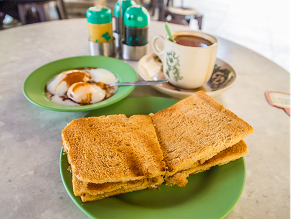
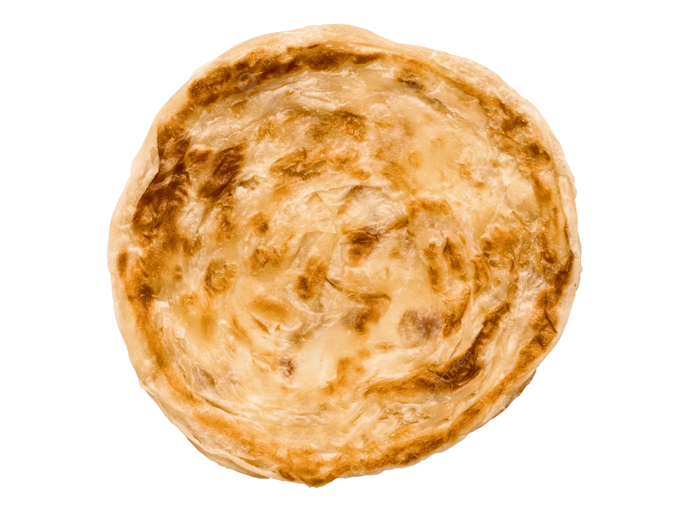
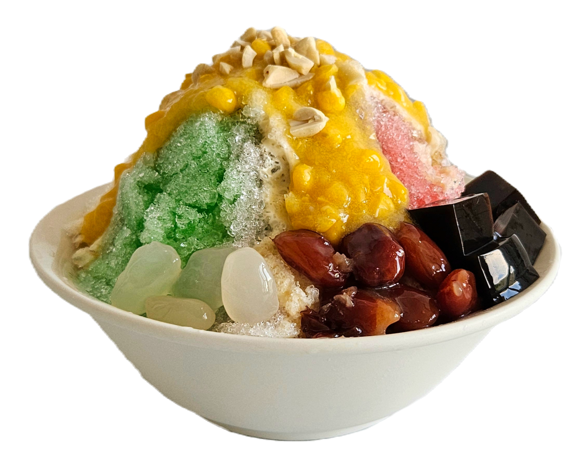
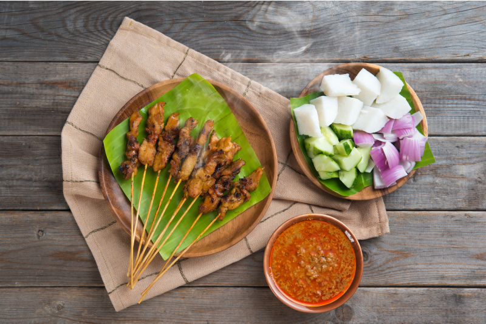
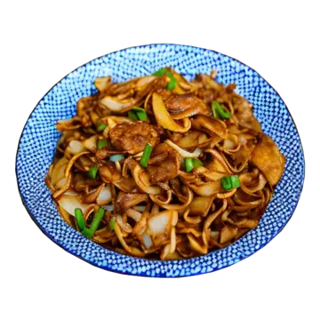
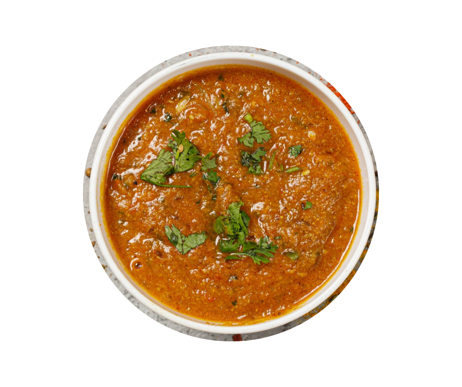

Hainanese Chicken Rice
Tender poached chicken served with fragrant rice cooked in chicken broth, accompanied by chilli sauce and dark soy sauce. Fun Fact: Considered Singapore’s "national dish" and has a Michelin-starred version at Hawker Chan.
Origin: Adapted from Hainan, China, but perfected in Singapore.
Fun Fact: Considered Singapore’s "national dish" and has a Michelin-starred version at Hawker Chan.
- Chicken (poached or roasted)
- Rice (cooked with garlic, ginger, and pandan leaves)
- Chilli sauce (blend of chilli, garlic, ginger, lime)
Key Ingredients


Laksa
Spicy coconut-based noodle soup with prawns, fish cakes, and cockles.
Types: Katong Laksa (Singaporean): Thick rice noodles cut short, eaten with a spoon, Nyonya Laksa: Peranakan version with a stronger herbal taste
Fun Fact: Named one of the world’s best soups by CNN Travel.
- Coconut milk
- Dried shrimp, lemongrass, turmeric
- Laksa leaves (daun kesum)
Key Ingredients
Chilli Crab
Mud crab stir-fried in a sweet, spicy, and tangy tomato-chilli sauce.
Origin: Created in Singapore in the 1950s by a chef experimenting with tomato sauce and chilli.
Fun Fact: Ranked #35 on the World’s 50 Best Foods list.
How It’s Eaten: With mantou (fried buns) to soak up the sauce.

Kaya Toast with Soft-Boiled Eggs
Crispy toast with kaya (coconut-jam) and butter, served with soft-boiled eggs and dark soy sauce.
Origin: A breakfast staple from Hainanese immigrants.
Fun Fact: Often paired with kopi (local coffee) at chains like Ya Kun Kaya Toast.
- Kaya (made from coconut milk, eggs, pandan, sugar)
- Toast (traditionally charcoal-grilled)
- Chilli sauce (blend of chilli, garlic, ginger, lime)
Key Ingredients


Roti Prata
Flaky, crispy flatbread served with curry or sugar.
Origin: Indian Muslim influence; derived from South Indian paratha.
Fun Fact: Eaten for breakfast, supper, or even as a late-night snack.
- Plain Prata – Classic version.
- Egg Prata – With an egg cooked inside.
- Cheese Prata – Modern twist with melted cheese.
Variations
Ice Kachang
Shaved ice dessert with red beans, sweet corn, grass jelly, and coloured syrups, topped with condensed milk.
- Shaved Ice
- Attap chee (palm seeds)
- Red Beans
- Syrup
Key Ingredients

Malay Influence
Fun Fact: Traditionally served with ketupat (rice cakes).
- Satay: Skewered grilled meat (chicken, beef, or mutton) with peanut sauce.
- Nasi Lemak: Coconut rice with fried anchovies, peanuts, egg, and sambal.
- Singapore Twist: Often includes fried chicken or otah (spicy fish paste).

Chinese Influence
Fun Fact: Hawkers use high heat for the "wok hei" (smoky flavour).
- Bak Kut Teh: Pork rib soup simmered with herbs like garlic and star anise.
- Teochew vs. Hokkien Style: Clear broth (Teochew) vs. dark, herbal broth (Hokkien).
- Char Kway Teow: Stir-fried flat rice noodles with eggs, cockles, and Chinese sausage.

Indian Influence
Origin: Created by Indian chefs for Chinese customers who enjoyed fish head dishes.
- Fish Head Curry: Spicy curry with a whole fish head, vegetables, and tamarind.
- Murtabak: Stuffed pancake with minced meat, eggs, and onions.
